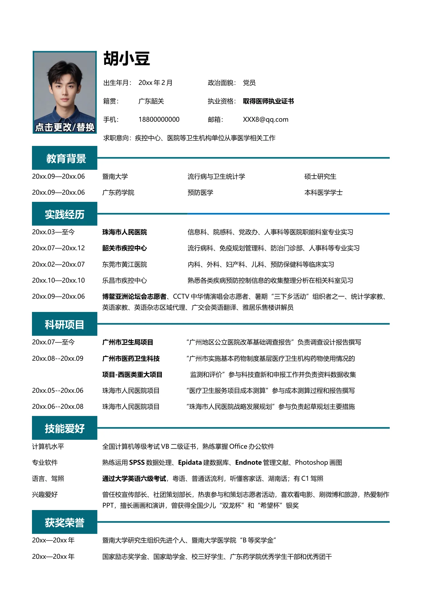

胡小豆
出生年月：20xx 年2 月
政治面貌：党员
籍贯：
广东韶关
执业资格：
取得医师执业证书
手机：
18800000000
邮箱：
XXX8@qq.com
求职意向：疾控中心、医院等卫生机构单位从事医学相关工作
教育背景
20xx.09—20xx.06
暨南大学
流行病与卫生统计学
硕士研究生
20xx.09—20xx.06
广东药学院
预防医学
本科医学学士
实践经历
20xx.03—至今
珠海市人民医院
信息科、院感科、党政办、人事科等医院职能科室专业实习
20xx.07—20xx.12
韶关市疾控中心
流行病科、免疫规划管理科、防治门诊部、人事科等专业实习
20xx.02—20xx.07
东莞市黄江医院
内科、外科、妇产科、儿科、预防保健科等临床实习
20xx.10—20xx.10
乐昌市疾控中心
熟悉各类疾病预防控制信息的收集整理分析在相关科室见习
20xx.09—20xx.06
博鳌亚洲论坛会志愿者
、CCTV 中华情演唱会志愿者、暑期“三下乡活动”组织者之一、统计学家教、
英语家教、英语杂志区域代理、广交会英语翻译、雅居乐售楼讲解员
科研项目
20xx.07—至今
广州市卫生局项目
“广州地区公立医院改革基础调查报告”负责调查设计报告撰写
20xx.08--20xx.09
广州市医药卫生科技
“广州市实施基本药物制度基层医疗卫生机构药物使用情况的
项目-西医类重大项目
监测和评价”参与科技查新和申报工作并负责资料数据收集
20xx.05--20xx.06
珠海市人民医院项目
“医疗卫生服务项目成本测算”参与成本测算过程和报告撰写
20xx.06--20xx.08
珠海市人民医院项目
“珠海市人民医院战略发展规划”参与负责起草规划主要措施
技能爱好
计算机水平
全国计算机等级考试VB 二级证书，熟练掌握Office 办公软件
专业软件
熟练运用
SPSS
数据处理、
Epidata
建数据库、
Endnote
管理文献、Photoshop 画图
语言、驾照
通过大学英语六级考试
，粤语、普通话流利，听懂客家话、湖南话；有C1 驾照
兴趣爱好
曾任校宣传部长、社团策划部长，热衷参与和策划志愿者活动，喜欢看电影、刷微博和旅游，热爱制作
PPT，擅长画画和演讲，曾获得全国少儿“双龙杯”和“希望杯”银奖
获奖荣誉
20xx—20xx 年
暨南大学研究生组织先进个人、暨南大学医学院“B 等奖学金”
20xx—20xx 年
国家励志奖学金、国家助学金、校三好学生、广东药学院优秀学生干部和优秀团干